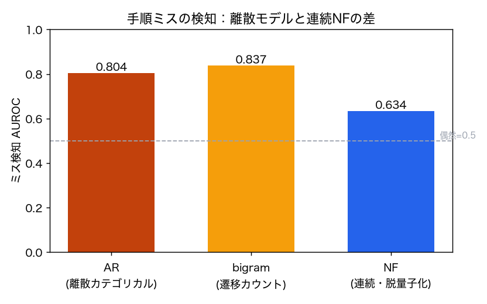
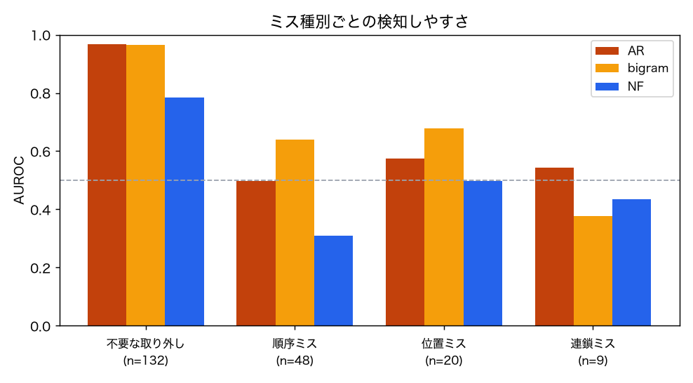
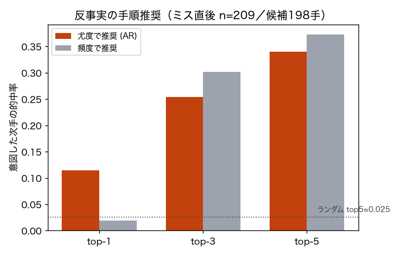
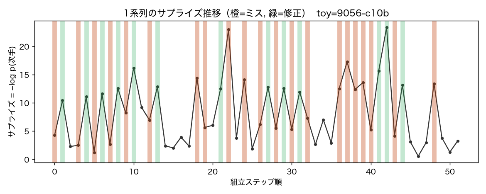
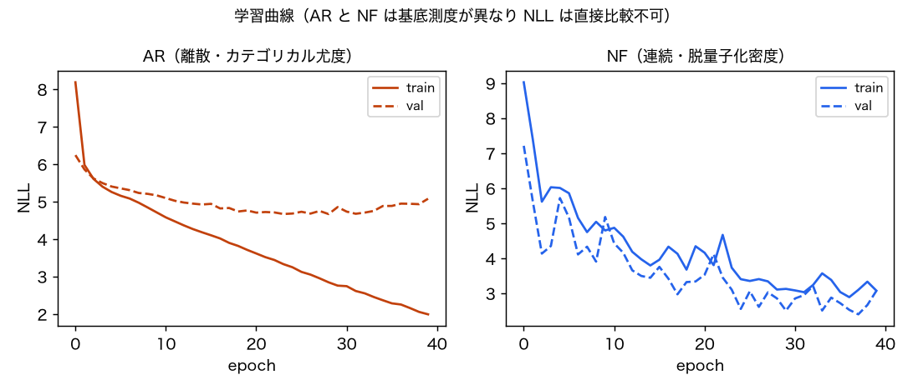

Assembly101-NF
離散の「次の手」尤度で手順ミスを検知し、反事実として正しい手を推奨する — 離散×連続の対の離散側
玩具組立（Assembly101 mistake-detection・328系列）の各手を
(動詞, 対象, 相手) の離散トークンとして、
履歴で条件づけた自己回帰カテゴリカル
p(次の手 | これまで, 玩具) を
correct な手のみで学習。
サプライズ = −log p でミスを検知し、
argmax で「本来の次の手」を反事実として推奨する。
姉妹プロジェクト
CaptainCook4D-NF（連続・実行のペース）と対にして、
「尤度による失敗検知でどの密度モデルが向くかは信号の性質で変わる」を検証する。
要点
- 離散のミス検知は自己回帰カテゴリカルが素直：ミス検知 AUROC は AR 0.804／
遷移カウント bigram 0.837。同じトークンを連続化して流し込む NF は 0.634 で、
離散モデルより +0.171（NF側が低い）。連続密度のNFを離散手順にそのまま当てるのは不利。
- 信号は主に局所的：単純な bigram（AUROC 0.837）は AR（0.804）とほぼ同水準。手順ミスの多くは直前の手との整合で説明でき、
履歴や玩具の条件づけの上積みは小さい（正直な観察）。
- NLLは直接比較しない：AR は離散分布の対数尤度、NF は連続密度（スケール依存）で基底測度が異なる。
比較は下流の AUROC で行う。
- 反事実推奨は機能：ミス直後に「本来の次手」を top-5 で 0.340 的中
（候補 198 手・ランダム top5≈0.025 ＝約14倍の水準）。頻度ベースの推奨とは同程度で、
上位1件（top-1）では尤度推奨が頻度より高い（0.115 対 0.019）一方、top-3/top-5 では頻度の方がやや高い（top-5 で頻度 0.373）。
スコアの読み方
- サプライズ = −log p(次の手)
- モデルが「この文脈でこの手は起きにくい」と判断するほど大きい値。correct な手だけで学習しているので、
ミス（本来ここで起きない手）ほどサプライズが高くなる、という想定で検知に使う。
- AUROC（ミス検知）
- サプライズの大小で「ミスの手」と「正しい手」をどれだけ正しく順位づけできるかの指標。
0.5＝偶然（当てずっぽう）、1.0＝完全、0.7前後＝中程度。ミスの割合に左右されないので不均衡データでも読める。
例：AR の 0.804 は「ランダムに選んだミスの手が、ランダムな正しい手よりサプライズが高い確率が約80%」。
- bigram（比較の基準線）
- 直前の1手だけから次を予測する単純なカウントモデル。これと同等なら「信号は主に局所的（直前の手との整合）」を意味する。
- NLL（学習曲線）
- 予測分布が実測をどれだけ当てるか（低いほど良い）。ただし AR は離散確率・NF は連続密度で単位が異なり、値の直接比較はできない。
だから比較は下流の AUROC で行う。
- 反事実の top-k 的中率
- ミス直後に成功尤度が高い順へ手を並べ、上位 k 手のどれかが「その系列で実際に続いた正しい手」と一致した割合。
候補 198 手から当てるので、ランダムなら top-5 で約 2.5%。0.34 はその十数倍。
手順ミスの検知

読み方：棒が高いほどサプライズでミスをよく見分けられる（点線=偶然0.5）。
離散の2手法（AR 0.804／bigram 0.837）は連続NF（0.634）より +0.171 高い。
意味＝離散の手順トークンに連続密度のNFを当てるのは不利。また bigram が AR と同等以上なのは、
検知に効く情報の多くが「直前の手との整合」という局所的なものだから。
ミス種別で見ると差がはっきりする。不要な取り外し（付けた直後に外すなど、直前と矛盾する手）は
AUROC ~0.97 と明確に検知できる一方、順序ミス・位置ミスは 0.5〜0.68 と難しい。
意味＝「間違い」と一口に言っても、局所的に矛盾する手は捉えやすく、大域的な段取りの誤りは捉えにくい。

読み方：カテゴリごとの検知 AUROC。n は該当ミスの件数（少ない種別は数値が不安定）。
参考：順序を人工的に入れ替えた系列の検知は AR で AUROC 0.649。一方、次の手を事前に当てる先読み（anticipation）は AR で 0.470 と偶然（0.5）を下回り、
ミス検知（起きたことの評価）と違って先読みはこの設定では難しい。
反事実：本来の次の手を推奨
各ミス直後に、成功尤度 p(次手|履歴) の高い手を順位づけし、その系列で実際に続いた
correct な次手を的中できるかを測る。

読み方：棒が高いほど「本来の手」を上位に挙げられている。点線＝ランダムに選んだ場合の top-5。
尤度による推奨（top-5 0.340）はランダム（0.025）比で十数倍の水準。頻度ベースの推奨とは同程度で、
top-1 では尤度推奨が上（0.115 対 0.019）、top-3/top-5 では頻度の方がやや高い（top-5 で頻度 0.373）。
意味＝低尤度で「ここは変」と気づくだけでなく、「では何をすべきか」まで具体的に出せる。
1系列のサプライズ推移

読み方：横軸＝組立の手順、縦軸＝サプライズ。橙＝ミスのある手、緑＝修正の手。
ミス（特に不要な取り外し）でサプライズが持ち上がる。逆に平坦なミスは検知しにくい手＝上の種別別の弱い部分に対応。
学習曲線

読み方：val が下がれば予測分布の当てはまり向上。左右で縦軸の単位が違い、
AR（離散確率）と NF（連続密度）の NLL は直接比較しない点に注意。
まとめ：結果の意味
離散の手順ミスは「タイミング」ではなく「どの手を・どの順で」の問題で、離散の次手尤度がそこに効く（ミス検知 AUROC 0.804）。
同じトークンに
連続密度の NF を当てると 0.634 まで下がる（
+0.171）＝
離散データに NF をそのまま使うのは不利。
さらに単純な bigram（0.837）が AR と同等以上で、
効く情報の多くは直前の手との局所整合。
検知できるのは局所矛盾（不要な取り外し ~0.97）が中心で、大域の段取り誤り（順序・位置 0.5〜0.68）は難しい——
「間違い」の中身で検知しやすさが変わるのが正直な描像。
一方で反事実（本来の手を top-5 で 1/3 提示）は機能する。
結論：離散手順では素直な離散モデルが向く。NF の旨みは連続側で出す——姉妹版
CaptainCook4D-NF（連続の実行ペース）と対で読むと、
失敗検知で向く密度モデルは信号が離散か連続かで変わることが見える。
再現
uv run python -m asm.extract # CSV -> steps.parquet
uv run python -m asm.features # 語彙
uv run python -m asm.train # AR + 脱量子化NF
uv run python -m asm.evaluate # 検知/種別/反事実
uv run python -m asm.report # 図 + このindex.html